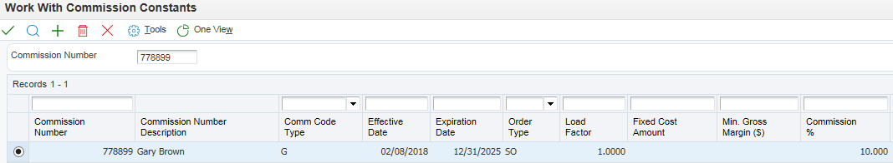
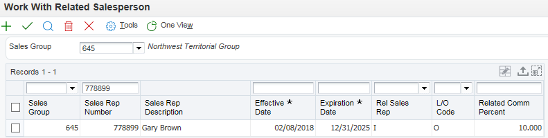
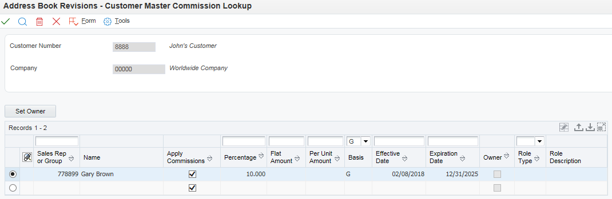

You set up commission information in the JD Edwards EnterpriseOne Sales Order Management system to reflect the company's sales environment.
You can assign one or more salespeople or sales groups to each customer. The salesperson can receive a commission based on whether the customer number is in the Sold To field, the Ship To field, or both fields on the order entry form. After you enter an order and update customer sales, the system applies a calculated commission amount to the salesperson's address book number or the address book number of each salesperson in the sales group. After sales update, you can review commission information in the Sales Commission File table (F42005), and summaries of COGS and sales by item in the Sales Summary History File table (F4229) to ensure that the salespeople receive the correct amount.
When you enter a sales order, the system processes the commission information based on whether you use preferences. If you do not use preferences, then the system retrieves commission information from the Sales Order Detail Commission table (F42160), which uses the information from the Sales Order Header Commission Information (F42150) and Customer Master Commission Information (F42140) tables, respectively. You can also enter commission information into the sales order header.
If you use basic preferences, the system retrieves commission information from the F42160 table, which displays the information from the Preference Profile - Sales Commission table (F40344). If no commission information is in the F40344 table, the system retrieves default commission information from the F42150 table. You can also use advanced preferences to retrieve commission information.
You can set up a sales group to distribute commissions to a group of two or more salespeople who contribute to a customer's sale. For example, if the sales group consists of a sales manager, account representative, and sales assistant, you assign a group code that represents the three salespeople. Sales groups are useful for identifying salespeople who are responsible for a customer's orders and maintaining multiple commission percentages.
Scope
Details
Programs and Files
Menu G4223 (Commission / Royalty Management)
Progam
Program Name
File
File Name
P42100
Commission/Royalty Related Salesperson
F42003
Related Salesperson
P42110
Commission/Royalty Constants
F42004
Commission Constants
P42120
Commission/Royalty Maintenance
F42005
Sales Commissions
P42170
Commission Accruals Lookup- Form exit from P42232 and P42230 (Online Invoice)
P42150
Sales Order Header Commissions Lookup - Form exit from P4210 (Sales Order Entry
and
Sales Order Detail Commissions Lookup - Row exit from P4210 (Sales Order Entry)
F42150
F42160
Sales Order Header Commissions
Sales Order Details Commissions
P42140
Customer Master Commission Lookup - Form exit from P03013 (Billing Information)
F42140
Customer Master Commission File
P42460/P90CA000
Sales Order/CRM Constants
F90CA000
CRM Constants Table
P4072
Preference Detail Revisions
F40721
Sales Commission Advanced Preference (Type 21)
P40344
Preference Profile Sales Commission
F40344
Sales Commission Basic Preference (Type 44)
Setup
Set up Salesperson in Address Book as an employee.
Create a Commission Code in UDC 42/RS (Related Salesperson). Commission Code must be numeric. The code can be the address book number of a salesperson, or a code that will have salespeople attached to it via the Commission/Royalty Related Salesperson (P42100) program.
Enter Commission/Royalty Constants (P42110). This information is stored in the Commission Constants (F42004) file.

Set up the Commission/Royalty Related Salesperson (P42100) program, for setting up groups of salespeople. (optional)

Commission codes, sales groups and rates can be attached to customers in Customer Billing Instructions in order to default commission information into the sales order. (optional) Note: In XE and ERP8 only two Commission Codes and Rates can be attached in the Customer Billing Instructions.In releases 8.9 an higher, Customer Master Commission Lookup (P42140) is accessed via a form exit from P03013 (Billing Information).

In Sales Order Entry (P4210) commission code and rate are entered into sales order header, or can default in from Customer Billing Instructions from the Ship-To Address. In 8.11 and after, a new program “Sales Order Constants” (P42460) allows users to default the Sales Commission Codes from the Sold To Address '0' , Ship To Address ‘1’ or both “2”. Commission code and rate can also be entered or changed in details behind details for each line. Note: On a CHANGE of an order, if going in from Header to Detail with the Update Header to Detail processing option on, all commissions will come from the Header, and any changes previously entered on the Detail line will be removed.
The Commission Code can default in via Sales Commission (44) preference profile.
Commission information is written at time of Sales Update (R42800). The system applies a calculated commission amount to the salesperson's address book number or the address book number of each salesperson in the sales group. After the sales update, the commission information can be reviewed to ensure that the salespeople receive the correct amount. The resulting commission information is stored in the Sales Commissions (F42005) file. There is a processing option behind Sales Update that bypasses the updating of the Commissions file.
Sales Order Constants (P42460)
Please note that the functionality in 8.11 was enhanced greatly for commissions. We now have a constants table F90CA000 (application P42460 or P90CA000) where users define whether the commissions should be written based on ship to, sold to or both.
Use the Sales Order Constants (P42460 or P90CA000) to set up the Sold To/Ship To Default. This determines whether the salesperson receives a commission based on the whether the customer number is in the Sold To, Ship To, or both fields on the order entry form.
Note. If the Sales Order Constants is set to base the commission on the customer in both the Sold To and Ship To fields and the user enters different customer numbers in the Sold To and Ship To fields, the salesperson may receive a double commission.
Note: P42460 setup is meant to decide whether commission has to applied based on sold to, ship to or both at order entry level. F42005 has information relating to commissions earned by the sales person. Address number field in F42005 is meant to store the customer number for whom order is created, which is sold to address number. This field is not meant to store the address number based on which commissions was applied. F42005 data is mapped to P42120 application which use AN8 field to display customer number.
Commission/Royalty Constants (P42110)
Commission information must be set up in Commission/Royalty Information. Required fields are Commission Number, Commission Type, Effective Date, Expiration Date, and Order Type.
Use commission constants to specify the rates, basis, and criteria that the system uses to calculate commission amounts on different order types. Commission information can be set up to conform to the needs of an organization.
The commission information can be set up to reflect the company's sales environment. One or more salespeople or sales groups can be assigned to each customer. The salesperson can receive a commission based on whether the customer number is populated in the Sold To, Ship To, or both fields on the order entry form.
Use commission constants to define the information that the system uses, in addition to employee-specific commission information, to calculate commission amounts. Additional information can be included before calculating the commission amount for a salesperson, a sales group, or salespeople within a group. The system compares the additional commission information such as order type, fixed costs, and effective dates against the order information before calculating the commission percentage.
Different commission percentages can be designated for each order type. A salesperson can be designated to earn five percent commission on a sales order, two percent on a direct ship order and seven percent on a blanket order. When setting this up, make sure the Customer Master, Commission Codes are not set up with a specific percentage or amount. This will override the commissions set up in Commission Constants (P42110).
Commission percentages can be designated for a limited period of time with variables that apply during the effective dates. A sales trainee can be specified to earn a seven percent commission on sales order totals during the training period. During that time the order must meet a minimum gross margin amount or the system does not calculate commissions. If the order qualifies for a commission, deduct fixed costs before calculating the commissions. After the training period, the salesperson earns a five percent commission on the gross margin of all orders after the system deducts the fixed costs. Multiple commission percentages can be entered at one time when changes are anticipated in the future.
As an alternative to entering a commission percentage, a commission amount for an invoice, cost, or gross amount can be entered.
To specify additional commission information to a sales group or to salespeople within a group, the additional information must be assigned to the group code.
For example, a group can be specified to meet the assigned minimum gross margin before the system calculates the commission. To calculate additional commission information for salespeople within the group, additional information can be assigned to each salesperson's number. After a commission constant has been set up, it cannot be deleted. The expiration date can be changed.
A sales group can be set up to distribute commissions to a group of two or more salespeople who contribute to a customer's sale.
For example, if the sales group consists of a sales manager, account representative, and sales assistant, a group code can be assigned that represents the three salespeople. Sales groups are useful for identifying salespeople who are responsible for a customer's orders and maintaining multiple commission percentages.
Additionally, a sales group can be set up to distribute commission amounts to a group of salespeople who contribute to a customer's sale. The commission information can be defined for each member of the group.
Commission Number (AN8)
Enter the address book number of the person being set up in the commission constant.
Commission Code Type C/T (CCTY)
Determines whether commissions are to be calculated using the Invoice Amount or Gross Margin. No matter which item the system uses, consider an amount as the starting point in the commission calculation and apply loading factors, fixed costs, minimum margins and so on.
For one salesperson there may be two lines set up using both calculations. One could be used for individual commission calculations, and one could be used for Territory Sales, with the salesperson as part of a group in the Related Salesperson setup.
Order Type (DCTO)
This field provides the ability to set a different calculation method and/or rate for different order types. For example, a salesperson might receive a higher rate for a blanket sales order than for a direct ship sales order. A different calculation method can be entered for each order. The following shows the first character for document types as defined by EnterpriseOne and should not be changed (UDC 00/DT).
P
Accounts Payable Documents
I
Inventory Documents
R
Accounts Receivable Documents
O
Procurement Order Processing Documents
T
Payroll Documents
J
General Accounting/Joint Interest Billing
Load Factor (LFAC)
A fixed percentage can be deducted from the sales invoice total (with commission type 'I') or can be deducted from Gross Margin (with commission type 'G'), before applying a fixed percentage.
Fixed Costs (AFXC)
This field holds the dollar amount of processing overhead per order that can be deducted 'off the top' from either sales invoice amount or gross margin.
Minimum Gross Margin Dollars (MGM)
This field holds the order-based minimum gross margin. It is possible to specify the minimum gross margin for any total order that can be subjected to commissions for any salesperson. If the gross margin is not equal to at least this amount, then the commission will not be calculated for the order.
Commission Percentage (CPCT)
The fixed percentage applied after the other factors are taken into account. Enter percentage as a whole number; example: enter 15% as 15.
Flat Commission Amount (FCA)
This field holds the specified commission amount. Enter a flat commission amount instead of a commission percentage. The per-unit amount must be entered to calculate commission amounts against the invoice, gross margin, or cost. Otherwise, the system will throw an error.
Per Unit Amount (APUN)
This field shows the dollar amount per unit of the item.
Division/Trade Class (AC01/AC04)
The 1st (Category Code) and 4th (Geographic Region) category code from Address Book are used to identify addresses for reports, mailings, etc.
Category codes are assigned in Address Book. The 30 codes are AC01 through AC30, and are defined in UDC tables 01/01 through 01/30.
Ship Method (FRTH)
This field is tied to UDC 42/FR designating the method by which the supplier shipments are delivered.
Password (PWRD)
A series of characters that must be entered before the system will update a file. Only users with access to the password can release an order. If no password is entered at this time, there will be no security against changes in the Commission/ Royalty Inquiry.
Commission/Royalty Related Salesperson (P42100) program
Sales Commissions can be calculated for groups as well as individuals. The Related Salesperson program allows the grouping of related salespeople based on Sales Code or Territory. Use a sales group to create a commission liability for more than two salespersons and to relate individuals or entities (for royalties) to a single order line. To do so, set up a sales/commission/salesperson code that represents not one but many salespersons in the related salesperson file. The system inserts this code in the billing instructions record for any customer or during sales order entry to create multiple commission records at the appropriate point in the order processing cycle (one record for each related salesperson). The system allows multiple percentages to a single salesperson.
The salespeople must be set up in Address Book (P01012).
Enter the Sales Code in User Defined Code (UDC) Table 42/RS. The Sales Code field will only work with numeric data. If alpha data is entered an error will occur.
Add the Sales Code in Commission/Royalty Information. The commission percentage here will be the total that all the salespeople get.
Attach the individual salespeople to the group in the Commission/Royalty Related Salesperson (P42100) program. The related commission percentage here will be the percent of the total specified in Commission/Royalty Information.
Example:
Commission in Sales Territory 123 is 8%. Two salespeople split that 8% 60/40. Setup: In Commission/Royalty Information, commission percentage is 8; in Related Salesperson, salesperson A's commission rate is 60 and salesperson B's commission rate is 40.
Sales Code (SLS)
The code used in place of the salesperson number when two or more salespeople are attached to an order.
Salesperson Number (SLSP)
This field holds the address book number of the salesperson.
Salesperson Name (ALPH)
This is a 30-character description of the salesperson.
Effective Date (CEFJ)
This is the date on which the commission percentage is effective.
Expiration Date (CXPJ)
This is the date on which the commission percentage expires.
Basis of Calculation (COMB)
This is the code that establishes whether commissions are to be calculated on the Sales Invoice 'I' or on Gross Margin 'G'.
Line or Order (LNOR)
Code that establishes whether commissions are based on order totals 'O' or line amounts 'L'.
Related Percent (RPCT)
This is the percent of the total commission that this salesperson will receive. Enter 50% as 50. For a given group, the percent of the sales does not have to equal 100 percent.
Adding a group or individual in the Commission/Royalty Related Salesperson (P42100) program requires a Sales Code, Salesperson Number, Effective and Expiration Dates. To delete a Related Salesperson record, simply find the salesperson, highlight the row, and click the Delete button. Related Salesperson information is stored in the Related Salesperson (F42003) file.
Sales Order Entry (P4210 / P42101)
P4210:
Commission codes and rates can be entered in the header of Sales Order Entry (P4210). This information will then apply to each detail line, and can be viewed and/or changed when taking the Row exit to Detail Commissions. For each line, the commission code and rate can be changed. In order to prevent commissions from being applied to a specific line blank out the commission code and rate. Processing Option #8 on the Display tab can be set to suppress commission information.
P42101:
When first entering P42101, user must populate Ship To /Sold To and Branch Plant. Then Submit and Close OR take the Edit Full Header option, then Submit and Close. Once this operation has been performed, GO TO Header Commissions drop down will display and open for users to enter Header Commission information.
1. After populating the header, when user changes the tab, F4211BeginDoc is called and populates the cache. Then header commissions can be entered. 2. After populating the header, when user clicks on save and continue, F4211BeginDoc is called and populates the cache. Then header commissions can be entered by taking the row exit in the detail screen.
Sales Update (R42800)
Information relating to commissions earned by sales people is written to the Sales Commissions (F42005) file only at Sales Update (R42800). This is due to the assumption that no commission is truly earned until the sale has completed its cycle. No Accounts Payable or General Ledger records are created for the accrued commissions. These entries must be created manually. Information stored in commissions file can be accessed through the Commission/Royalty inquiry (P42120) or through a user defined report. There is a processing option to bypass writing to the Sales Commissions (F42005) file.
Note: If the user wants to create commission entries that will affect the general ledger, then they will need to set up an Advanced Price Adjustment. Usually the adjustment will be an accrual to the general ledger as there is no way as of Xe to write entries directly to the Accounts Payable system. These adjustments will not write to the Sales Commission (F42005) file.
Subledger Field
An option in the R42800 Sales Update program allows the user to specify that the subledger field of the accounts be populated with a certain value. The option is found on the Update tab, number 9. One of the available choices is the Salesman Number. The value is not written to the account until the Sales Update batch is posted, using the R09801. Only one value can be populated in the subledger, so in the situation where commission records are written for multiple salespeople, the numerically lowest Commission Number (AN8) will be written.
Commission/Royalty Inquiry
At Sales Update (R42800), commission information is stored in Sales Commissions (F42005) file, and can be reviewed with the Commission/Royalty Maintenance (P42120) program.
Forms Used to Review Commission Information
Form Name
Form ID
Navigation
Usage
Commission Maintenance Revisions
W42120C
Select a commission record on Work with Commission Maintenance.
Review and revise commission information.
Commission Accruals Lookup
W42170A
Select a sales order and select Order, then Online Invoice from the Row menu on Customer Service Inquiry.
Select Commission Accruals from the Form menu on Work With Online Invoice.
Review commission accruals for a sales order.
For inquiry into the Commission/Royalty Maintenance (P42120) program, one or more of the following fields can be entered in the header of this inquiry screen:
Sales Person
Order Number
Customer
Item Number
The following fields can also be used for inquiry on the QBE line of W42120D.
Order Amount
Salesperson
Order Margin
Code Type
Line Amount
Commission Percentage
Line Margin
Commission Amount
Load Factor
Fixed Cost
Once a row is selected these fields are unprotected and changes can be made to the grid records in W42120C:
Total S/O
Line Total
Comm Code Type
Comm %
Flat Commission Amount
Per Unit Amount
Commission Amount
Gross Margin
Line Margin
Load Factor
Fixed Cost Amount
Order Cost
Line Cost
Debit Cost
Note: A Password is validated against the Commission Constants (F42004) file based on the Commission Number and the Commission Type fields.
This program is based on the information stored in the Sales Commissions (F42005) file. It is the only effective way to see the commissions that have been calculated. The Commission Amount is not initially stored in the Sales Commissions (F42005) file after Sales Update (R42800) - it is calculated in the Commission/Royalty Maintenance (P42120) screen. After inquiring on the commission, the amount is then stored in the Sales Commissions (F42005) file.
If more commission information is desired a custom UBE should be run over the Sales Order Ledger (F42199) file and the Sales Order History (F42119) file, if records are purged to history.
Commission Calculations
The system calculates commissions as follows:
If based on order level, retrieve order total & order cost. If based on Line level, retrieve Line level total cost and price.
Then check the commission type.
If based on Invoice amount (I), use extended price. If based on Cost (C), use extended cost. If based on margin (G), use extended price - extended cost.
Using based on amount retrieved above in line/order level calculations, Calculate the load factor and subtract the load factor and fixed cost amounts from based on amount.
If Flat commission amount is entered, Per Unit amount also needs to be entered. Otherwise, system will throw an error.
Based on this calculation above, System will first calculate commission based on percentage specified and then, if flat commission amount is entered, it will multiply Commission amount with FCA and then divide by Per unit amount. The FCA should be paid for every Per unit amount.
For example, Base commission amount is $1000 (based on Commission type, it could be extended price, cost or margin), FCA is specified as $10 and APUN is $100. It means, $10 FCA should be paid for every $100 APUN of commission amount $1000, so it will be $100. So as per the calculation,
Flat commission amount = ($1000 X $10)/$100 = $100.00. It will be added to the commission amount $1000.
(Order Amount) x (Commission Percentage) = Commission Amount
Examples:
Simple Percentage Commission Calculations
To perform a simple calculation, access the Sales Order Entry (P4210) program. On the Sales Order Entry (P4210) header screen there are four fields that related to Sales Commissions. On SLSM enter a salesperson address number. On SLCM enter a rate for percentage calculation. On CCTY enter 'I' for commission type Invoice. Enter a 10% commission percentage as 10.
Simple Default Commission Calculation
In order for a simple default of the sales commission, specify the salesperson address number and percentage to be paid in the Customer Billing Instructions (P03012) record of each customer in the salesperson's territory. These values default into the order during Sales Order Entry (P4210) based on the criteria defined in the Sales Order Constants, and are included in each order detail line. Then, as part of Sales Update (R42800), a record will be written to the Sales Commissions (F42005) file (unless bypassed).
Complex Percentage Commission Calculation - Total Sales Dollar Amount
In order to do a complex calculation, there must first be additional information entered into the Commission Constants (F42004) file. Additional information can be added to the Code Type, Load Factor, Fixed Costs, and /or Minimum Gross Margin fields.
Enter a Sales Order with a commission code and commission rate.
When viewing the Commission/ Royalty Inquiry, the system will calculate the commission as follows:
To set up a calculation by Gross Profit, either inquire on an existing salesperson address number or set up a new salesperson. The key field for this type of calculation is the Commission Code Type. A 'G' would need to be added into this field in order to calculate Gross Profit. Enter an order adding the salesperson number and percentage amount. When viewing the results of this order in the Commission/ Royalty inquiry program the system will calculate as follows:
Customer Total = $1000.00 Item Cost = $500.00 Gross Margin = $500.00 Sales Commission x 20% Dollar Commission = $100.00
Calculations by Group or Territory
With this calculation the Sales Code (Territory or Group) must be entered in UDC 42/RS, as well as the Commission Constants (F42004) file. Once entered into the constants file, access the Header screen for the Sales Order. Since the Sales Order Header will not default in a commission rate for territories, there are four ways to use territories:
The first way to enter groups is by entering the information for the Related Salespeople without any rate attached. This is a simple calculation that will look back at the individual percentages set up in the Commission Constants (F42004) file.
The second method is to enter a territory with percentages entered in to the Related Salesperson program for each address number. On the Sales Order Header screen add the Sales Code into the 'COMM CODE' field without adding in a rate. The system will calculate this in the same manners as the above scenario. The system is smart enough to overlook any commission percentages entered into the Related Salesperson (F42003) file from the Commission/Royalty Related Salesperson (P42100) program. The system will look at the individual percentage from the Commission Constants (F42004) file that was previously set up by Salesperson Address number.
If the rate field on the Sales Order Entry Header or Commission Constants for the Territory has a percentage entered in the field, the system will use that percentage along with the percentage entered into the Related Salesperson (F42003) file. It will calculate like this:
Order Header Percent = 10% Related Percent x 50% Individual Percent = 5%
Thus the program will calculate 5% from either the Sales Order Total or the Gross Margin, whichever has been designated on the Related Salesperson program. The individual percentages by salesperson are not used. Any rate entered into the Sales Order Header will override the Commission Constants.
If a percentage is entered into the order header, but no percentages exist in the Related Salesperson (F42003) file, then the system will use the full rate amount from the individual percentage that was entered by address number in the Commission Constants (F42004) file through the Commission/Royalty Constants (P42110) program.
Note: Commissions will only be applied at the header or detail. If header commissions are added or changed after accepting the order and commissions are set to default to the detail, the header commission information will override any detail commission information that was previously applied.
EnterpriseOne 8.9 Enhancements
Sales Reps
Prior to EnterpriseOne 8.9 the commission process only allowed a maximum of two sales reps or groups to be assigned to a customer, customer group, product or product group.
EnterpriseOne 8.9 now provides the ability to assign an unlimited number of sales reps. or groups at the customer, customer group, product or product group levels. Multiple entries (multiple percentages) for the same sales rep or group at the customer, customer group, product or product group levels will also be available.
Sales Order Detail Lines
Prior to EnterpriseOne 8.9 the commission process only allowed a maximum of two sales reps or groups to be assigned to a sale order detail line.
EnterpriseOne 8.9 now provides the ability to assign an unlimited number of sales reps. or groups to a sales order detail line. Multiple entries (multiple percentages) for the same sales rep or group to a sales order line will also be available.
Commissions Calculation
Prior to EnterpriseOne 8.9 commissions were calculated based on invoice amount or gross margin. EnterpriseOne 8.9 now provides the ability to calculate based on cost.
Commission Percentage
Prior to EnterpriseOne 8.9 commissions were calculated based on percentage (%) only. EnterpriseOne 8.9 now provides the ability for commissions to be calculated as a flat amount - for example, $10 of commissions for every $100 of sales, gross margin or cost.
Flat Amount Commission Calculation
Flat Amount Commission: Enter a value to specify a commission amount. Enter a flat commission amount instead of a commission percentage. The user must enter the per-unit amount to calculate commission amounts against the invoice, gross margin, or cost.
Per Unit Amount: Enter the dollar amount per unit of the item.
If based on order level, retrieve order total and order cost. If based on Line level, retrieve Line level total cost and price.
Then check the commission type to determine the amount to start with:
If based on Invoice amount (I), use extended price If based on Cost C, use extended cost If based on margin (G), use (extended price - extended cost)
Using based on amount retrieved above in line/order level calculations, calculate the load factor and subtract the load factor and fixed cost amounts from based on amount.
If Flat commission amount is entered, Per Unit amount is also needs to be entered. Otherwise, system will throw an error.
Based on this calculation above, System will first calculate commission based on percentage specified and then, if flat commission amount is entered, it will multiply Commission amount with Flat Commission Amount and then divide by per unit amount. The Flat Commission Amount should be paid for every per unit amount of commission amount.
For example, Base commission amount is $1000 (based on Commission type, it could be extended price, cost or margin), Flat Commission Amount is specified as $10 and Amount per Unit is $100. It means, $10 Flat Commission Amount should be paid for every $100 Amount per Unit of commission amount $1000, so it will be $100. So as per the calculation:
Flat commission amount = ($1000 X $10)/$100 = $100.00.
Order Based Commissions
Prior to EnterpriseOne 8.9 commissions were calculated based on the total order amounts.
EnterpriseOne 8.9 now will calculate based on the total line amounts to which the sales rep. or group is assigned to.
New Tables in 8.9 and above
Three new tables were created to accommodate the expansion of the commission functionality. These tables are: